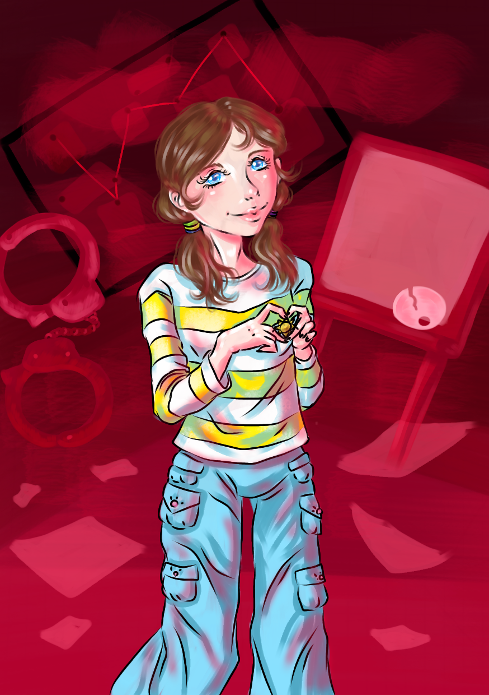

<- Повернутися на головну сторінку
Хіна Амано

Головна інформація
| Імена |
Хіна Амано |
| Зовнішність |
Світло-каштанове волосся, зібране у два хвостики, щира й добра посмішка. Великі небесно-блакитні очі з дитячим блиском. Яскрава кофта з жовтими смужками, трохи завелика, вільні світло-блакитні штани-карго з безліччу кишень і білі кеди. Струнка, майже тендітна, але в її поставі відчувалася внутрішня сила. Оптимістка. В очах - ніби цілий світ надії, що чомусь не згас навіть тут.(цитата) |
| Діагноз |
Посттравматичний стресовий розлад (ПТСР) |
| Друзі |
Кей Морвен |
| Союзники |
|
| Перша поява |
Пролог |
У сюжеті:
Рано вранці, коли пацієнтів зібрали в актовсу залу для проведення Соборища, Хіну привели, щоб представити. Під час сніданку дівчина підсілася до Кея та почала розмову. Вони знайшли спільні риси, але вона не знала, що хлопець знайде натхнення для зображення саме її очей. ... Хіну змусили прийти до актової зали у смиренній сорочці для оголошення ...
Cім'я:
Відносини з окремими персонажами:
Цікаві факти:
1) Улюблена картина Хіни - "Зоряна ніч", пензля Вінсента Ван Гога.
2) Дівчина захоплюється розслідуванням злочинів, що не подобалося її батьку, що змушував Хіну ходити до музичної та художньої школи, щоб "витіснити дурню".
Галерея